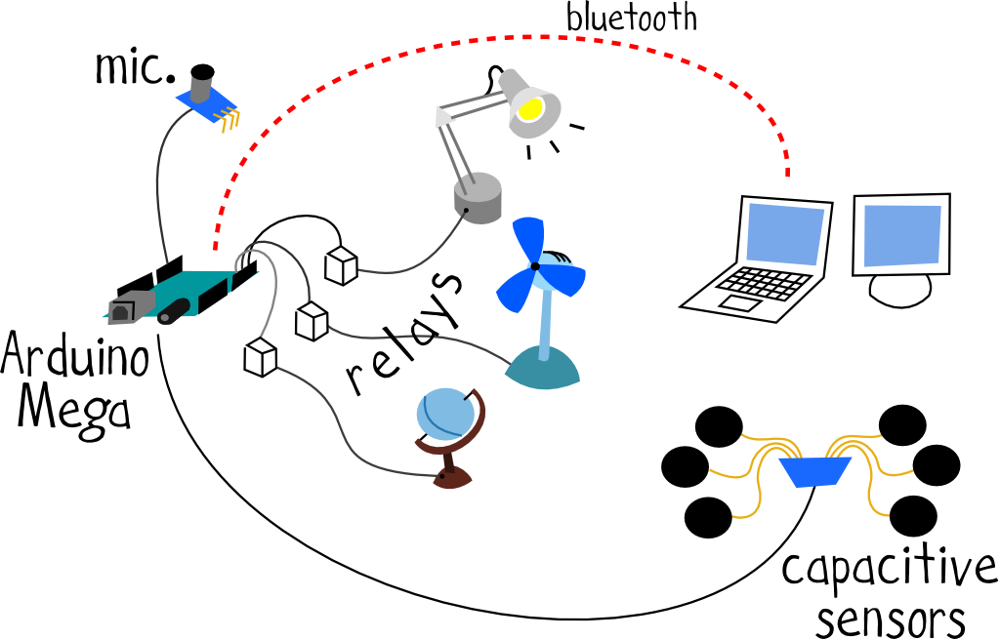

Stazione 2

Con la stazione 2 sperimentiamo con altre possibili interazioni, tutte gestite da una scheda Arduino Mega:
- abbiamo un microfono ad elettrete che, se sollecitato opportunamente (battendo le mani ad esempio), premette l’attauzione di una particolare azione, come ad esempio l’accensione di una lampada!
- abbiamo uno sketch realizzato in Processing che mostra a schermo una semplice interfaccia utente: l’interfaccia mostra un pulsante che, se cliccato, causa una nuova azione.
- Infine alcuni elettrodi fungono da sensori capacitivi, ognuno dei quali associato con un diverso comportamento.
Software
Hardware